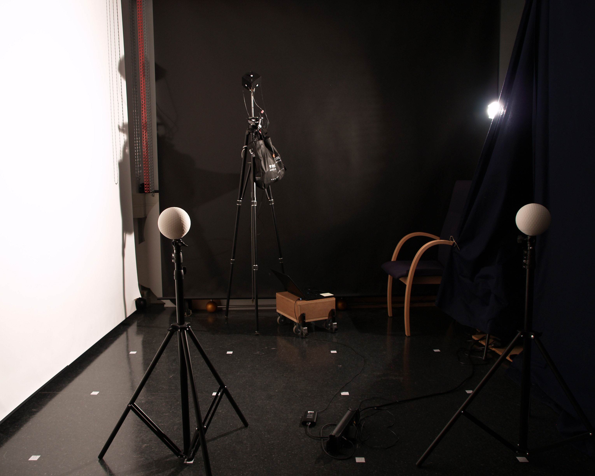

This room was measured with three devices: Konica Minolta cubic meter, ordinary illuminance meter, and a phone camera paired with Luxi diffuse cap and respective app (see details in the paper).
Note, that the measurements were done with diagonally oriented cube.
Front view of the measured room (three of four rows of measurement positions marks are visible).
There a single light source in this room: spotlight in the far right corner, partially shaded by a curtain.
Download file with mesurements of this scene: Konica Minolta, ordinary luxmeter, LuXi cap
